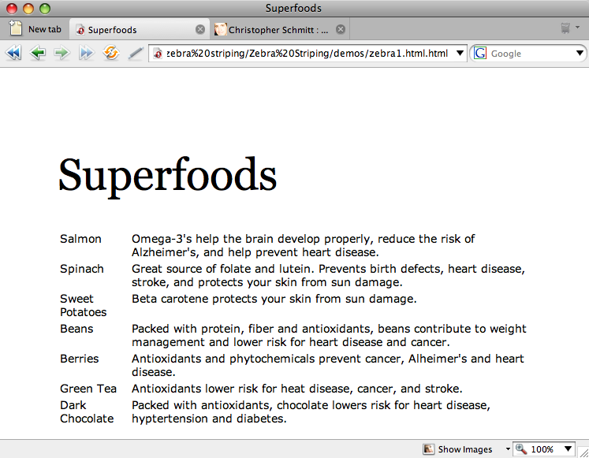
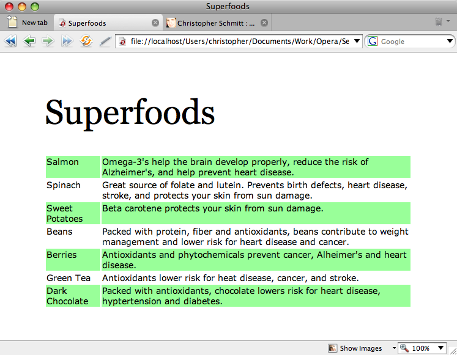

Zebra striping tables with CSS3
Introduction
Zebra striping—or, coloring or shading alternate rows on a table—is thought to enhance the usability of a table by guiding the user’s eye along a row. This method has been used in print for years, and many designers try to emulate this technique when making tables for the Web. CSS has made achieving zebra striping easier, but, up until CSS3, it still involved a bit of cumbersome coding.
With the advent of CSS3’s nth-child selector, we are able to target multiple elements in a document by creating a "counter" that skips over specified children in the document tree. This allows us, specifically, to style only the odd or even rows of a table. This article details how to use nth-child sucessfully.
Download the sample code for this article.
The bad old days ...
Before we begin covering how to use this new selector, let’s review the old way of doing things. First, we would have to add a class attribute to every other table row:
<table>
<tr valign="top" class="odd">
<td>Salmon</td>
<td>Omega-3's help the brain develop properly, reduce the risk of Alzheimer's, and help prevent heart disease.</td>
</tr>
<tr valign="top">
<td>Spinach</td>
<td>Great source of folate and lutein. Prevents birth defects, heart disease, stroke, and protects your skin from sun damage.</td>
</tr>
<tr valign="top" class="odd">
<td>Sweet Potatoes</td>
<td>Beta carotene protects your skin from sun damage.</td>
</tr>
</table>
Luckily, our table is fairly small, so this doesn’t require too much work. But you could imagine how tedious this process would be if our table was dozens of rows long! We would then add a CSS rule that targeted those rows:
tr.odd {
background-color: #99ff99;
}
While this method works, it’s a bit inefficient in that it requires extra markup in the HTML document. This markup, in turn, doesn’t really add anything semantically valuable: The odd rows don’t serve a different function than the even rows; we just want them to look different. Hence, we haven’t kept the structure separate from the presentation. Not to mention that coding a large table this way can be a frustrating task.
Introducing the nth-child
CSS3, however, includes selectors that let us keep our hands out of the markup and use just CSS to pick out the rows we want to style. The relevant selector—the nth-child selector—is a bit complicated, so let’s take a moment to understand how it works.
The nth-child selector targets elements in a document tree that have a certain number of siblings before it. Where n is an integer, :nth-child(an+b) would match the element that has an+b-1 siblings before it.
What does this mean?
That n is basically a counter: it begins with zero, then it moves up incrementally until it runs out of children elements. Then the b variable represents the counter’s starting place—in other words, the position of first element we begin counting from. Finally, the a variable represents the positions of the elements we match after that.
To clear things up a bit, let’s break down an example:
:nth-child(5n+2)
In our hypothetical example above, the b variable is set as two, which means that the first element targeted is the second child beneath the parent in the document tree, the second paragraph within the body, or the second item within a list.
Also in the example above, the a variable is set to five, which means that every fifth child after that is also to be targeted. Now that we’ve defined both a and b variables, we can determine which child elements are going to be styled. By plugging in the starting value of zero and counting till we run out of child elements, we can determine which child elements get styled.
In this example as shown in Table 1, you can see that the second child element is matched, then the seventh, then the twelfth, and so on, until we’ve run out of elements.
| Which child element gets selected? | |||
|---|---|---|---|
| Child Element | Formulas | ||
| n | 5n | 5n+2 | |
| 0 | n/a | n/a | |
| 1 | Y | ||
| 2 | Y | Y | |
| 3 | Y | ||
| 4 | Y | ||
| 5 | Y | Y | |
| 6 | Y | ||
| 7 | Y | Y | |
| 8 | Y | ||
| 9 | Y | ||
| 10 | Y | Y | |
| 11 | Y | ||
| 12 | Y | Y | |
Table 1. Demonstrating which child element is selected
Calculating zebra stripes
How does this selector help us with zebra striping? Note that this formula allows for some quite complicated configurations—making it very versatile. To target only odd or even elements, however, we need only remember two kinds of selectors.
To target all even rows as shown in Table 2, we can use the following selector:
tr:nth-child(2n)
| Which child element gets selected? | ||
|---|---|---|
| Child Element | Formulas | |
| n | 2n | |
| 0 | n/a | n/a |
| 1 | Y | |
| 2 | Y | Y |
| 3 | Y | |
| 4 | Y | Y |
| 5 | Y | |
| 6 | Y | Y |
| 7 | Y | |
| 8 | Y | Y |
| 9 | Y | |
| 10 | Y | Y |
| 11 | Y | |
| 12 | Y | Y |
Table 2. Demonstrating that only even-numbered of rows are selected
To target all odd rows, we would compose the following selector:
tr:nth-child(2n+1)
This selector matches the first row within a table, and every second row after that—all of the odd rows as shown in Table 3.
| Which child element gets selected? | |||
|---|---|---|---|
| Child Element | Formulas | ||
| n | 2n | 2n+1 | |
| 0 | n/a | n/a | |
| 1 | Y | Y | |
| 2 | Y | Y | |
| 3 | Y | Y | |
| 4 | Y | Y | |
| 5 | Y | Y | |
| 6 | Y | Y | |
| 7 | Y | Y | |
| 8 | Y | Y | |
| 9 | Y | Y | |
| 10 | Y | Y | |
| 11 | Y | Y | |
| 12 | Y | Y | |
Table 3. Demonstrating that only odd-numbered of rows are selected
Illustrating zebra striping
Figure 1 shows a table listing various "superfoods" and their nutritional virtues as an demonstration of zebra striping.

Figure 1: The HTML table
In this demonstration, we want to color the background of the odd rows so that the table is easier to read. The declaration block is written as such:
tr:nth-child(2n+1) {
background-color: #99ff99;
}
This rule matches all of the odd rows, and applies the background color only to that row as shown in Figure 2.

Figure 2: Only the even-numbered rows are styled
If these formulas are too complicated for you to remember, the nth-child property allows the math-challenged to use keyword shortcuts. Instead of a mathematical formula, we can also use the "odd" or "even" keywords as a value:
tr:nth-child(odd) {
background-color: #99ff99;
}
CSS3 provides us with a hassle-free technique for zebra-striping our tables, list items or forms, and so on.
Unfortunately, the nth-child selector enjoys limited browser support. As of this writing, the nth-child selector works in Safari 3 and Opera 9.5. Sadly, you may want to stick to the more inefficient CSS coding method until support for the property is brought up to speed in other browsers. Or, if you want to support other browers like Internet Explorer with easy method of zebra striping, you can "patch" up nth-child support in those browsers. By using a JavaScript framework like jQuery, you can deliver a JavaScript-enabled solution through conditional comments to just IE while the other browsers use the CSS rules to style the page.
Superfoods table live example
If you have a browser that supports nth-child, this linked HTML table will appear to be zebra-striped. The CSS is inserted in the head on this page so you can view source to easily check out what is going on.
This article is licensed under a Creative Commons Attribution, Non Commercial - Share Alike 2.5 license.
Comments
The forum archive of this article is still available on My Opera.
-
thx, helpful :)
No new comments accepted.YangombiUmpakati
Wednesday, January 25, 2012